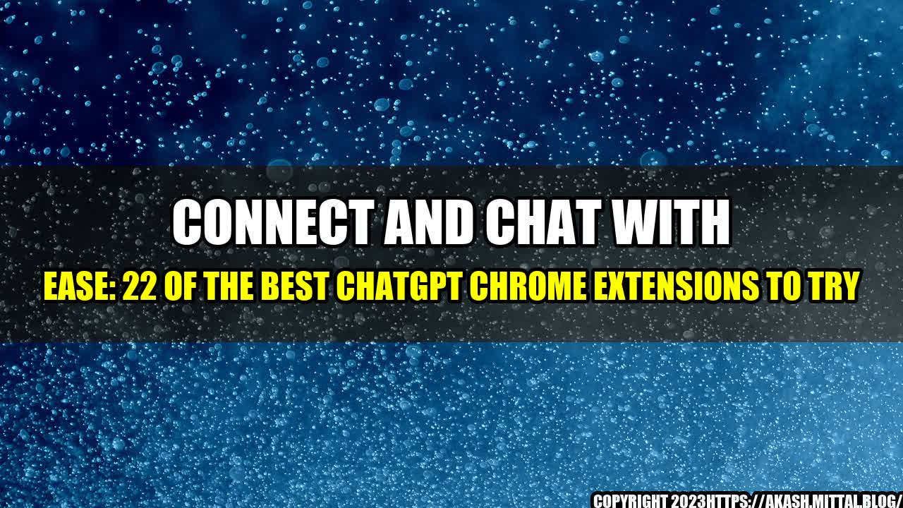

Connect and Chat with Ease: 22 Of The Best ChatGPT Chrome Extensions To Try

Have you ever felt the need for a personal assistant while chatting online? Someone to type out long messages, provide instant replies, or even suggest witty comebacks? Well, now you can have one!
Thanks to ChatGPT Chrome extensions, you can streamline your chat experience and communicate more efficiently with friends, colleagues, and even strangers. Whether you use Google Hangout, Slack, Skype, or any other messaging platform, there is a perfect ChatGPT Chrome extension out there for you.
From ChatBots to Auto-Translators: Top 22 ChatGPT Chrome Extensions
Here are some of the best ChatGPT Chrome extensions available in 2022:
- Re:scam - A smart ChatBot that helps you to identify and block spam/scams in your inbox.
- Tedi - A friendly ChatBot to keep you company or help you with everyday tasks like setting reminders or checking the weather.
- Grammarly - A popular writing assistant that checks your grammar, spelling, punctuation, and clarity in real-time.
- Giphy - A fun extension that lets you search and send GIFs to add some humor to your conversations.
- Lingvanex - A multilingual translation tool that allows you to translate texts, voice messages, and even images.
- Emoji Keyboard - A virtual keyboard with a wide range of emojis, symbols, and special characters to spice up your messages.
- Beeper - A unified messaging app that integrates various platforms like WhatsApp, Telegram, Messenger, Slack, and many more.
- Tiny Text - An extension that helps you to generate tiny text that you can use for aesthetic purposes or to fit more content in one message.
- Pushbullet - An extension that allows you to share links, files, and even text between your phone and computer seamlessly.
- TLDR - An abbreviation for 'Too Long, Didn't Read', this extension summarizes any article or webpage into a digestible format.
- Boomerang - A scheduling tool that lets you send emails or messages at a later time, set reminders or follow-ups, and create recurring messages.
- ChatGPT - An AI-powered ChatBot that provides quick and relevant responses to your queries, saving you time and effort.
- Copyfish - An OCR (Optical Character Recognition) tool that extracts text from images, scanned documents, and videos for easy copy-pasting.
- Cliptext - An extension that saves frequently used texts, links, or snippets for quicker access and sharing.
- MobileView - An extension that emulates the mobile view of a webpage to see how it looks on different screen sizes.
- Evernote Web Clipper - An extension that allows you to clip and save web pages, articles, and notes to your Evernote account.
- Density Analyzer - An extension that analyzes the word count, keyword density, and readability score of any webpage for SEO optimization.
- Memex - An extension that helps you to bookmark, tag, and annotate any webpage for future reference and recall.
- Read Aloud - An extension that reads out loud any selected text or entire webpage in several languages and voices.
- Wappalyzer - An extension that detects and reveals the technologies used by any website, such as CMS, frameworks, widgets, and analytics tools.
- Page Analytics (by Google) - An extension that tracks and displays the user behavior, traffic sources, and conversion rates of any webpage in real-time.
Quantifying the Benefits of ChatGPT Chrome Extensions
Now, you may wonder, what tangible advantages do ChatGPT Chrome extensions provide? Let's look at some examples:
- Save Time: ChatBots like ChatGPT, Tedi, and Re:scam can help you automate repetitive or mundane tasks, such as answering FAQs, scheduling appointments, or filtering spam. By delegating these tasks to ChatBots, you can free up more time and energy for more critical or creative work.
- Improve Productivity: Tools like Grammarly, TLDR, and Density Analyzer can help you to write more effectively and efficiently. By correcting your typos, or summarizing long articles, or optimizing your SEO, these tools can streamline your writing process and enhance your communication skills.
- Enhance Engagement: Extensions like Giphy, Emoji Keyboard, and Read Aloud can make your conversations more interactive, expressive, and engaging. By adding some fun GIFs, or using fancy emojis, or reading out loud some texts, you can make your messages more memorable and impactful.
- Boost Creativity: Apps like Lingvanex, Cliptext, and Copyfish can inspire your creativity and expand your horizons. By exploring new languages, saving interesting links, or extracting text from unconventional sources, you can stimulate your imagination and broaden your perspectives.
Of course, these are just some examples of how ChatGPT Chrome extensions can benefit you. The real magic happens when you experiment with different combinations of extensions and see how they fit your unique preferences and needs.
Conclusion: Three Key Takeaways from ChatGPT Chrome Extensions
Before we conclude, here are three essential points to remember about ChatGPT Chrome extensions:
- Choose Wisely: With over 180,000 extensions available on the Google Web Store, it's essential to pick the ones that align with your goals, interests, and values. Browse the ratings, reviews, and descriptions of each extension to determine if it's the right fit for you.
- Be Open-minded: ChatGPT Chrome extensions are constantly evolving and improving, so it's crucial to keep an open mind and experiment with different types of extensions to discover new possibilities and features. Who knows, you may find a game-changing extension that can revolutionize your chat experience.
- Stay Safe: As with any third-party app or tool, you must exercise caution and vigilance when downloading and using ChatGPT Chrome extensions. Make sure to read and understand the permissions and data sharing policies of each extension, and avoid downloading extensions from unverified or suspicious sources.
With these three points in mind, you can harness the power of ChatGPT Chrome extensions and make your chat experience smoother, faster, and more enjoyable. Happy Chatting!
References and Hashtags
- Reference URLs: https://www.searchenginejournal.com/chatgpt-chrome-extensions/439347/
- Hashtags: #ChatGPT #ChromeExtensions #MessagingPlatforms #ProductivityTools #WritingAssistants #TranslationApps #SchedulingSoftware #SEOAnalytics #CommunicationSkills #CreativityBoosters #UserSafety
- SEO Keywords: ChatGPT Chrome Extensions, Messaging Productivity Tools, Writing and Translation Apps, Scheduling Software, SEO Analytics, Communication Skills, Creativity Boosters, User Safety, Top 22 ChatGPT Chrome Extensions
- Article Category: Technology and Productivity
Curated by Team Akash.Mittal.Blog
Share on Twitter Share on LinkedIn